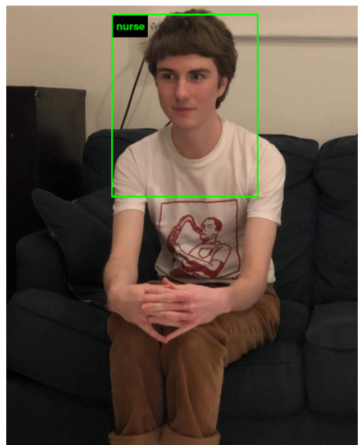

home
web
ux
music
artwork
software
about
artist statement
andrewcshike@gmail.com
https://andrewcs.bandcamp.com
https://instagram.com/_and.rew__/

he/him. lots of tea. freelance web developer, creative software designer, & artist.
convo w/ darwin grosse of cycling74
http://artmusictech.libsyn.com/podcast-298-andrew-c-s